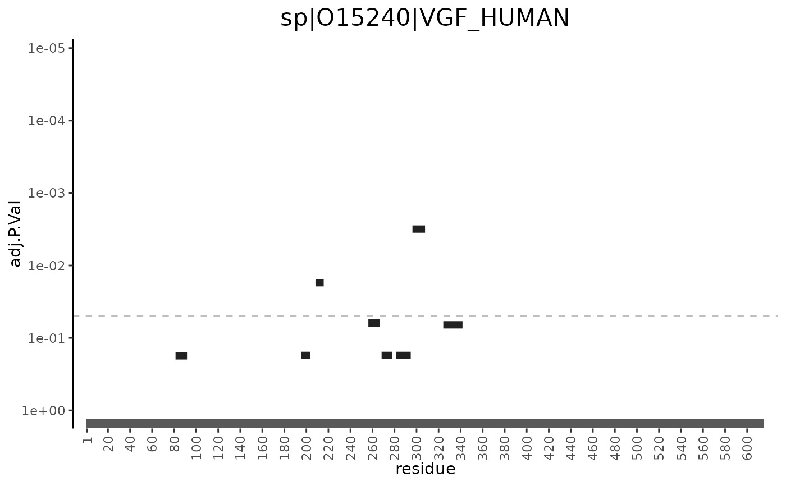

peptide_significance_map.RdMapping peptides onto the protein sequence with different ways to show statistical significance.
peptide_significance_map(
x,
accession,
p_val_from,
type = c("discrete", "continuous", "manhattan"),
accession_col = "accession",
title_from = accession_col,
min_y = 0,
width_y = 0.025,
step_y = 0.033,
border_color = "white",
border_size = NULL,
aa_step = 20,
...
)data.frame with required columns Last_AA, First_AA, and ProtLen,
as well as any columns specified by p_val_from, accession_col,
title_from, and fill_by (only if type is "continuous" or
"manhattan"). Recommended to provide the fData table of an MSnSet
object.
character; name of the protein (or accession, in general terms) for which to plot peptides.
character. Name of the column in x with p-values.
character. Different ways of representing p-values. Types are: "continuous" - continuous color scheme, "discrete" - discrete color scheme, "manhattan" - p-values shown on y-axis (akin to a Manhattan plot).
character. Column in x that accession is taken from.
Typically, it is "accession".
character. One or more columns in x used to construct the
plot title. Defaults to accession_col.
numeric; shifts peptides vertically.
numeric; vertical width of each peptide rectangle.
numeric; step size to resolve peptide overlaps.
character; color used for the borders of the peptide rectangles.
numeric or NULL; linewidth of the borders around the
peptide rectangles. If NULL (default), the linewidth will be calculated
from the protein length.
numeric; distance between x axis breaks, starting at aa_step
and continuing along the length of the protein.
other arguments passed to functions determined by type. See
details for more information.
ggplot object.
Parameters passed to helper functions determined by the value of
type:
character; (type = c("continuous", "manhattan")) name of
a column in x used to fill the peptide rectangles.
data("peptide_count_data")
library(msmsTests)
#> Loading required package: msmsEDA
alt.f <- "y ~ group + 1"
null.f <- "y ~ 1"
div <- colSums(exprs(peptide_count_data)) # normalization factor
res <- msms.glm.qlll(peptide_count_data, alt.f, null.f, div = div)
res$p.val.adj <- p.adjust(res$p.value, "BH")
# adding significance metrics
f_data <- fData(peptide_count_data)
f_data$P.Value <- res[featureNames(peptide_count_data), "p.value"]
f_data$adj.P.Val <- res[featureNames(peptide_count_data), "p.val.adj"]
fData(peptide_count_data) <- f_data
# Path to FASTA file
fasta <- system.file("extdata/FASTAs",
"H_sapiens_UniProt_SPROT_2021-06-20.fasta.gz",
package = "MSnSet.utils")
peptide_count_data <- map_peptide_position(object = peptide_count_data,
fasta = fasta,
accession_col = "protein",
peptide_col = "Sequence")
#> Note, the anticipated/suggested columns in the
#> peptide-to-spectrum matching results are:
#> -----------------------------------------------
#> accession
#> calculatedMassToCharge
#> chargeState
#> experimentalMassToCharge
#> isDecoy
#> peptide
#> spectrumFile
#> spectrumID
peptide_significance_map(x = fData(peptide_count_data),
accession = "sp|O15240|VGF_HUMAN",
accession_col = "protein",
p_val_from = "adj.P.Val",
type = "manhattan")
#> Warning: All aesthetics have length 1, but the data has 8 rows.
#> ℹ Please consider using `annotate()` or provide this layer with data containing
#> a single row.
